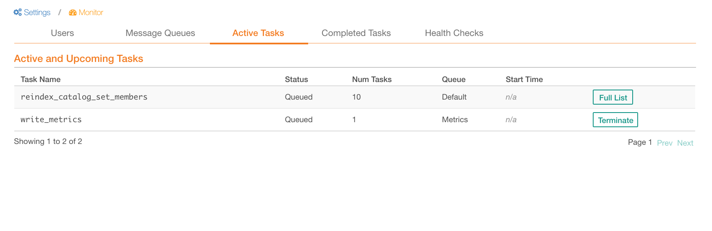
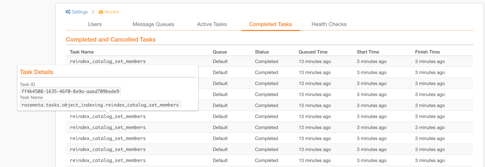
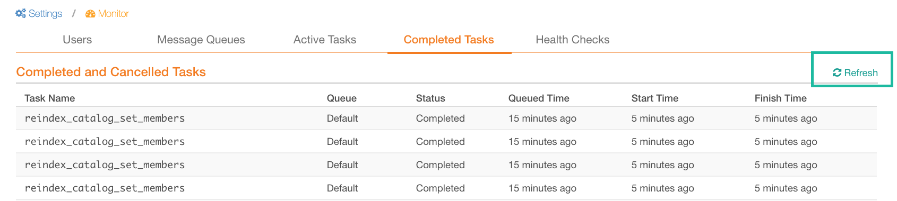

Monitor Tasks¶
Alation Cloud Service Applies to Alation Cloud Service instances of Alation
Customer Managed Applies to customer-managed instances of Alation
Applies from Alation V R3 (5.6.x)
Alation provides ability for Server Admins to monitor the background tasks being processed by the backend server - directly in UI without referring to database tables or logs.
Tasks are granular functions executed by the Alation backend server. Jobs - series of functions - such as Data Profiling or Metadata Extraction, may execute one or more tasks. There are multiple queues of tasks on the server, and each queue can be processed by one or more workers. Occasionally, tasks may run for an excessive period of time consuming resources and causing other tasks to get stuck in the queue without moving into processing. Alation Admins can step in and resolve this situation by informing themselves on the status of existing tasks and terminating stuck tasks in the Monitor section of the Admin Settings.
Note
Task termination is part of advanced administrative functionality that should be used sparingly and only if a long-running task causes problems. Terminating tasks manually is a short-term solution in a situation when there may be an underlying problem with task processing.
Monitor provides both details on task properties and a capability to revoke overlong tasks so that other tasks can move from the queued state into processing.
To manage tasks,
Go to Admin Settings.
Find the Monitor section (on the right):
To view details about active tasks, click Active Tasks.
To view completed and canceled tasks, click Completed Tasks. The task list will open with all available information on the selected task category.
Manage Active Tasks¶
Viewing Active and Upcoming Tasks¶
Active and upcoming tasks can be viewed in the Active Tasks section of the Monitor:
Task Property |
Description |
|---|---|
Task Name |
The name of the task (tasks are named as the corresponding internal function) |
Status |
Active Tasks that are currently being processed by workers. Queued Tasks that are still waiting in the queue. Scheduled - Tasks that are scheduled by the system to run at a specific time and have an estimated time of arrival. Note that this is backend server’s internal scheduling mechanism that is different from the scheduling of such data source jobs as Metadata Extraction, Data Profiling, and Query Log Ingestion. These jobs are scheduled by Admins in Alation, but their respective tasks will be added to the queue with the status Queued. |
Num Tasks |
The number of tasks with the same name. Tasks with identical names can be differentiated by their ID. If Num Tasks is greater than one, the corresponding table row will have the Full List button. To display particular Task IDs, click Full List. |
Queue |
The name of the queue that holds a particular task. Knowing the name of the queue can be useful for finding logs on that task. For example, if the queue name of the task is FastQueue, then logs on this task will be in the FastQueue log file: celery-fastqueue_error.log. |
Start Time |
Time the task began processing |
Terminating a Task¶
To terminate a single task, click Terminate. To terminate one of the tasks with the same name, click Full List, choose the specific task by its ID, and click Terminate for that task. Only the tasks running for an excessive period of time should be terminated.
{kind=link}
Termination will stop the task and enable queued tasks to run if they were delayed in the queue.
Terminated tasks will be moved to the Completed Tasks section of the Monitor and will appear in the Completed and Canceled Tasks table with the status Canceled.
Terminating a Job¶
When you terminate a task successfully, the corresponding job will be terminated as well. Major jobs and their respective tasks in Alation are:
Job |
Corresponding Task Name |
|---|---|
Data Profiling |
profile_tables |
Metadata Extraction |
adbc_extract_metadata |
Query Log Ingestion |
import_query_log |
These jobs can be viewed in the Job History section of their respective tabs on the Data Source Settings page. If you need to stop a stuck or overlong job, you can terminate the corresponding active task.
Example¶
Suppose you are running a Metadata Extraction (MDE) job on a Data
Source and notice that it is taking longer than usual and blocking
other tasks. To stop the job, you can terminate the
corresponding adbc_extract_metadata task. After terminating the
task, you will see that the MDE Job History table is updated to
show that a specific MDE job is stopped and has now the
status FAILED.
View Completed Tasks¶
Completed and terminated tasks can be viewed in the Completed Tasks section of the Monitor:
Task Property |
Description |
|---|---|
Task Name |
The name of the task (tasks are named as the corresponding internal function) |
Queue |
The name of the queue that holds
a particular task. Knowing the
name of the queue can be useful
for finding logs on that task.
For example, if the queue name of
the task is |
Status |
Completed Tasks that are completed successfully. Canceled Tasks that are terminated by the user. |
Queued Time |
Time the task was queued |
Start Time |
Time the task began processing |
Finished Time |
Time the task finished processing |
Find Out Task ID¶
To find out the Task ID and its full name, mouse over the name of the specific task in the Active and Upcoming Tasks table or Completed and Canceled Tasks table. The Task Details info box having these details will appear.
{kind=link}
Refresh the Task List¶
To view the latest state of the tasks, mouse over the table title Active and Upcoming Tasks on the Active Tasks tab or Completed and Canceled Tasks on the Completed Tasks tab to reveal the Refresh button on the right. Click it to refresh the table and update its content.
{kind=link}
Identify a Problem Task¶
Most tasks are processed fast except for the major ones produced by the Metadata Extraction, Data Profiling, and Query Log Ingestion jobs. It is not recommended to terminate tasks unless you suspect or know there is a problem with a particular task and it is stuck for a long time.
To estimate how much time a task usually takes to complete,
Refer to the Completed and Canceled Tasks table on the Completed Tasks tab of the Monitor.
Estimate the average of Finish time - Start time to get an understanding of the normal task processing time before you conclude that a task is taking longer than usual and terminate it.
To understand the typical queue times, estimate the time difference between the time when the job was queued and when it ran by estimating the average of Start time - Queued time for all tasks. The normal time in queue varies based on the number of Celery workers and the number of concurrent jobs.
Troubleshooting¶
Known Issues¶
Issue |
Possible Cause |
Solution |
|---|---|---|
Failed to terminate tasks |
Either the task is already revoked or task is already completed. |
Check these cases:
|
All tasks are in queued state for a long time |
Celery component of backend may not be running |
Restart the Celery workers:
|
Admin terminated an active task, but it is still listed as active in the Active Tasks table |
It may be a different instance of the task with the same name. |
Check Task IDs of the terminated and active task. If Task IDs of the terminated and the active tasks are the same, it may be a bug. |
Tips on Log Collection¶
Logs on every task can be obtained from the Celery queue logs. To find logs of a specific task, check the Celery log for the queue name of that task. For example, if the queue name of the task is FastQueue, then go to /opt/alation/logs/ directory and check the celery-fastqueue_error.log file to find information on the task in question.